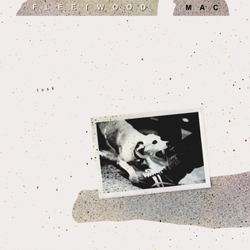
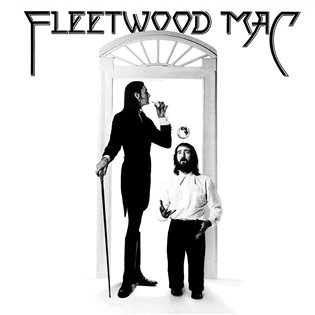

HUDBA
Největší hity a nezapomenutelná alba.
Legendární alba

Rumours (1977)
Kritiky oceňované album plné emocí a harmonie.
- Dreams
- Go Your Own Way
- The Chain
- Don't Stop

Tusk (1979)
Experimentální dvojalbum s temnějším zvukem a odvahou.
- Tusk
- Sara
- Think About Me

Fleetwood Mac (1975)
První album s Buckinghamem a Nicksovou.
- Rhiannon
- Landslide
- Say You Love Me
Hudební styly Fleetwood Mac
- üé∏ Blues rock (poƒç√°tky v 60. letech s Peterem Greenem)
- üé∂ Soft rock
- üéµ Pop rock
- üåæ Folk rock
- üéß Classic rock
- ✨ Prvky funku, country a art rocku